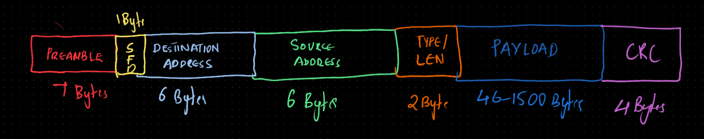

Introduction
Networking often feels like magic at the software level, but for an RTL designer, it is a world of rigid rules, precise timings, and high-stakes error detection. This article explores the "how" and "why" of Ethernet MAC design through a conversational, systems-level lens.
Q: We always hear about "The Network," but where does hardware actually start?
It starts at the MAC (Media Access Control). While your software handles things like IP addresses and TCP connections, it eventually hands a "blob" of data to the hardware. The MAC is the digital brain that takes that blob and wraps it in a standardized Ethernet frame so it can survive the journey across a wire.
Q: Does the hardware just send the data immediately?
Not quite. It has to clear its throat first. Every frame starts with a Preamble—seven bytes of alternating 1s and 0s. Think of it like a drummer counting down "1, 2, 3, 4" before a song starts. It gives the receiver’s clock a chance to synchronize with the transmitter before the "real" data arrives.
7 Bytes 0x55] B --> C[SFD
1 Byte 0xD5] C --> D[MAC Header & Payload] D --> E[FCS / CRC-32] E --> A classDef flow fill:#fff3e0,stroke:#e65100,stroke-width:2px; class A,B,C,D,E flow;
The Anatomy of an Ethernet Frame
In hardware terms, an Ethernet transmission is a continuous stream of bits. The MAC organizes these bits into a specific structure that the physical layer can interpret. Below is the standard bit-level breakdown of an IEEE 802.3 frame.

As shown above, the data flows from left to right. The Preamble and SFD are considered physical layer overhead, followed by the Layer 2 header, the variable payload, and finally the FCS for error detection.
Q: What about the "contract" of the frame? How is it structured?
Every frame follows a strict sequence of fields that the RTL must generate or parse:
- Preamble & SFD: The "Get Ready" signal.
- MAC Addresses: The 6-byte "To" and "From" hardware labels.
- EtherType: The "What is this?" field. If the value is 1536 or higher, it identifies the protocol (e.g., 0x0800 for IPv4).
- The Payload: Your actual data (usually 46 to 1,500 bytes).
- The FCS: The "Bodyguard" (a 32-bit CRC) that ensures nothing got corrupted.
Q: You mentioned 1,500 bytes. What if I want to send more?
That’s where Jumbo Frames come in. In high-performance data centers, we often bump that limit up to 9,000 bytes. It’s much more efficient because the hardware spends less time processing headers and more time moving "Goodput." However, it’s a "know your audience" situation—if you send a Jumbo Frame to an old 1,500-byte MTU switch, it will simply drop it as an oversized frame error.
Q: Speaking of dropping... why does the hardware just "throw away" packets?
Hardware is ruthless. If the FCS (CRC) check fails—meaning even one bit was flipped by interference—the MAC drops the packet instantly. Ethernet at Layer 2 does not "fix" errors; it simply discards them. Another common reason is Congestion. If the internal buffers of a switch fill up, it performs a "Tail Drop," discarding new arrivals because there is simply no room left in the memory.
Q: How does the PHY (Physical Layer) know when the data has actually stopped?
It doesn't "read" the length; it watches the physical signaling.
- In 1G Links (GMII): There is a physical
RX_DV(Data Valid) pin that the PHY pulls low when the electrical energy on the wire stops. - In 10G+ Links (XGMII): The wire is never "silent," so we use special Terminate (/T/) control characters embedded in the bitstream to say, "That's all, folks!"
Q: Any final "Pro-Tips" for someone designing this in RTL?
Always remember the "Endian Trap"! Ethernet is Big-Endian for bytes but Little-Endian for bits. You send the most significant byte first, but inside that byte, you send the least significant bit first. If you get your bit-ordering wrong in your CRC generator, your hardware will speak a language no one else understands.
The Physical Bridge: GMII, RGMII, and XGMII
While the Ethernet frame is the logical contract, these interfaces are the electrical contract. They define how the MAC "talks" to the PHY. As speeds increased, the industry had to find ways to send more data using fewer pins.
Q: Do all Ethernet interfaces speak the same "physical" language?
No, and this is where RTL design becomes a game of pin-efficiency and timing closure:
- GMII (Gigabit Media Independent Interface): The classic 1Gbps interface. It uses an 8-bit wide data bus at 125MHz. It’s simple to implement but "pin-hungry," requiring about 22-24 pins per port.
- RGMII (Reduced GMII): The modern workhorse for 1Gbps. It uses DDR (Double Data Rate) signaling to send 4 bits on the rising edge and 4 bits on the falling edge of a 125MHz clock. This cuts the pin count in half (to ~12 pins).
- XGMII (10-Gigabit MII): Designed for 10Gbps. It typically utilizes a 32-bit or 64-bit wide data bus. Unlike the 1G variants, XGMII moves away from dedicated "Valid" pins and instead uses special Control Bits for every byte to signal starts, ends, and idles.
Q: As an RTL designer, which one is the "trickiest" to implement?
RGMII is notorious for timing headaches. Because you are sampling data on both edges of a 125MHz clock, your "data eye" is only 4ns wide.
The standard requires the clock edge to arrive exactly in the middle of the data window (a 2ns skew). If the hardware doesn't provide this delay, you must implement it in RTL using a PLL or IDELAY primitives. If your timing constraints are off by even a few hundred picoseconds, the MAC will report constant CRC errors.
The RGMII Timing Masterclass
RGMII is a "Source-Synchronous" interface, meaning the clock and data signals are sent simultaneously. This creates a significant challenge for the receiver: how do you sample data if the clock edge arrives exactly when the data is transitioning?
The 2ns Skew
To meet Setup and Hold times, a 1.5ns to 2ns delay must be introduced to the clock. In older designs, this was done physically by lengthening the copper traces on the PCB. Modern designs use RGMII-ID (Internal Delay), where the delay is implemented inside the silicon using a PLL or delay-line primitives.
Control Signal Multiplexing
RGMII saves pins by multiplexing control signals using XOR logic on the RX_CTL and TX_CTL pins:
- Rising Edge: Transmits the Enable/Valid signal (TX_EN / RX_DV).
- Falling Edge: Transmits an XOR of the Enable and Error signals (e.g., RX_DV ^ RX_ER).
This allows the MAC to detect not just that data is arriving, but also if the PHY has detected a medium-level error, all without needing an extra pin.
Conclusion
Designing an Ethernet MAC is about more than just moving bits; it's about adhering to a legacy of compatibility while pushing the limits of high-speed throughput. Understanding these fundamental Q&As is the first step toward mastering the Big Three of silicon networking: Ethernet, PCIe, and DDR.